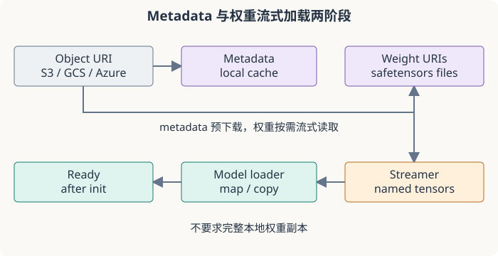
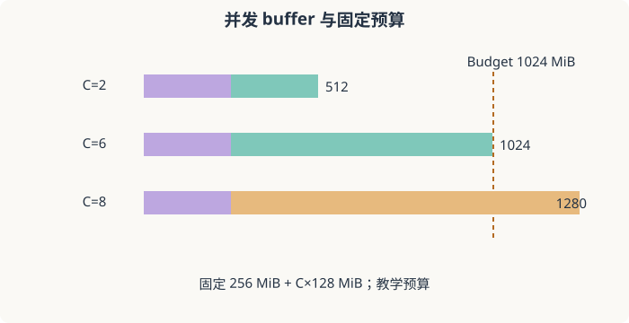

第 55 章 · SGLang 内核与存储
Model Object Storage：Metadata、Safetensors Streaming 与分布式 I/O
怎样从对象存储流式读取模型权重，控制启动时延、并发与峰值内存？
怎样从对象存储流式读取模型权重，控制启动时延、并发与峰值内存？
1. 为什么对象存储不必完整下载
S3/GCS/Azure object storage 与 POSIX local files 不同。固定 SGLang 采用两阶段：配置、tokenizer、index 等 metadata 预下载到本地 cache；权重通过 runai_streamer 惰性流式读取。支持 safetensors；不是所有格式都可用，也不意味着完全没有本地 metadata。
2. 从 URI 到 tensor iterator
ObjectStorageModel 负责 metadata path，RunaiModelStreamerLoader 保留 weight URI，list_safetensors 后结合 index 过滤重复文件；SafetensorsStreamer.stream_files/get_tensors 产生 named tensors，model-specific loader 消费。模型 ready 仍依赖 mapping、postprocess、初始化。

3. 并发流与内存预算
教学模型 C 并发，每个 buffer b bytes，固定额外 memory m0，峰值 staging≈Cb+m0；预算 M 则 C≤floor((M−m0)/b)。假设 M=1GiB、m0=256MiB、b=128MiB，C≤6。真实 streamer memory_limit 管理自身 buffer，不等于全进程 RSS 或 HBM cap。
4. 带宽瓶颈与 pipeline
若 W=32GiB，总 object throughput=4GiB/s，则纯传输至少8s；即使增加流数也不能超越共同瓶颈。读取、H2D、参数转换可重叠，理想数据阶段受最慢环节限制，实际还有 metadata、重试、启动与 tail。不能把理论下界等同 TTFT 或完整 boot time。

5. 分布式 streaming 的边界
源码 distributed mode 以 world 为范围；stage-local draft load 或不匹配 world 的 load group 回退独立 streaming，以免等待不参与的 PP stage。device 选择在适合 CUDA-like distributed 条件下使用指定 device，否则 CPU。不要将 distributed flag 等价为每 rank 只读取自己的 checkpoint shard；参数分片见47。
6. 部署与安全
对象 URI 自动检测 runai_streamer；extra config 仅 distributed/concurrency/memory_limit。通过受控 workload identity/短期凭证授予读权限，固定对象版本与校验源，避免将 secrets 写入命令历史、日志或仓库。S3-compatible endpoint 配置需与平台一致；并发启动考虑限流与失败重试。
7. 测试与成本
拆分 metadata、stream read、copy、postprocess、ready；记录吞吐、GET 请求、重试、network egress、host/device memory、模型输出校验。cold/warm cache 与不同 rank layout 独立比较。CPU toy 仅验证预算与下界，未连真实 bucket。
8. 交互：逐步检查机制
Object Storage Loading 教学实验
C=2：256MiB staging +256MiB fixed=512MiB。
C=6：768MiB staging +256MiB fixed=1024MiB，达到教学预算。
C=8：1280MiB，超过预算；降低并发或 buffer。
教学模型仅验证机制与反例，不代表实测性能。
9. CPU 最小实验
object_streaming_budget.py 使用 Python 标准库，可独立执行。
python3 examples/object_streaming_budget.py不执行实际 GPU、网络、云存储或集群操作。
10. 源码阅读路线与证据
固定上游快照 0fde0356cc44bca9a7727a3a2e2c2d10cd5bd30f，区分实现、推导与教学示例。
- Overview / Configuration：Object storage metadata is downloaded before launch; runai_streamer streams safetensors and accepts distributed/concurrency/memory_limit.
- ObjectStorageModel.download_and_get_path / list_safetensors：Metadata local path and object URI handling are distinct.
- RunaiModelStreamerLoader：Loader validates extra keys, preserves object URI for weight streaming, filters shard files.
- runai_safetensors_weights_iterator / set_runai_streamer_env：Streamer yields named tensors; stage-local non-world groups disable distributed mode; env configuration controls concurrency and memory.